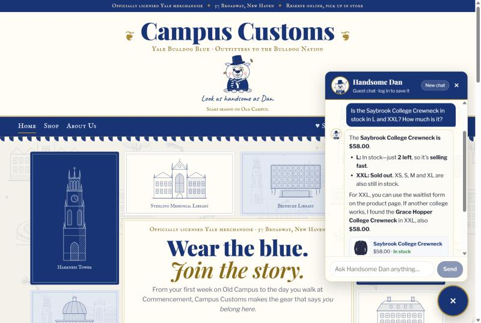
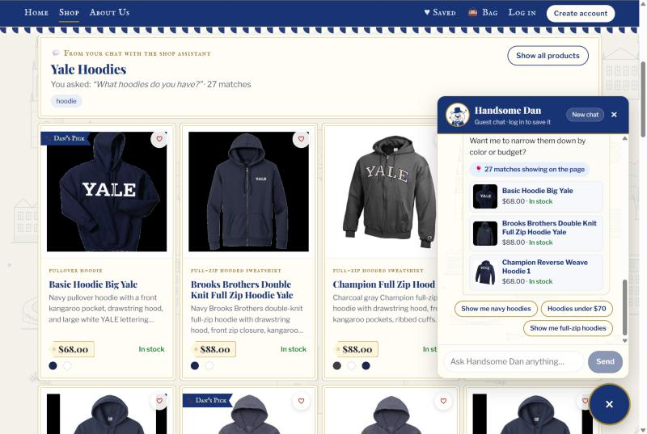
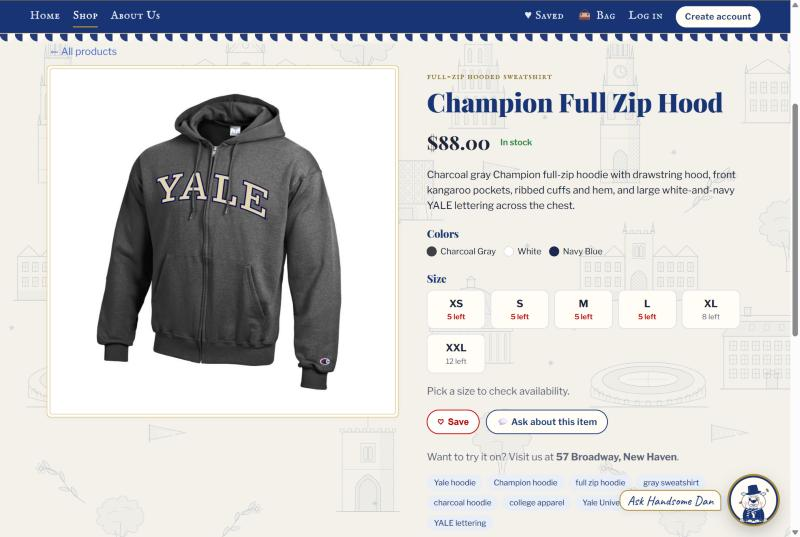
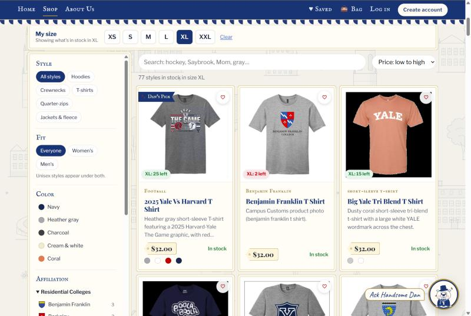
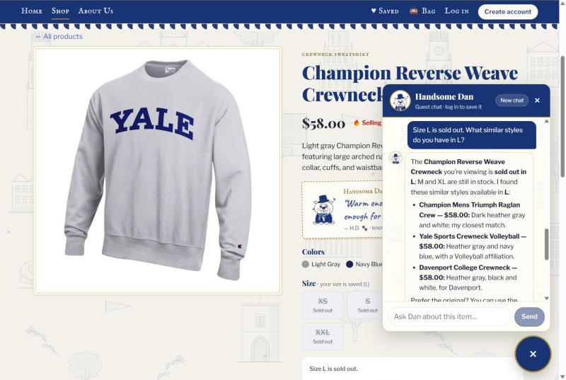
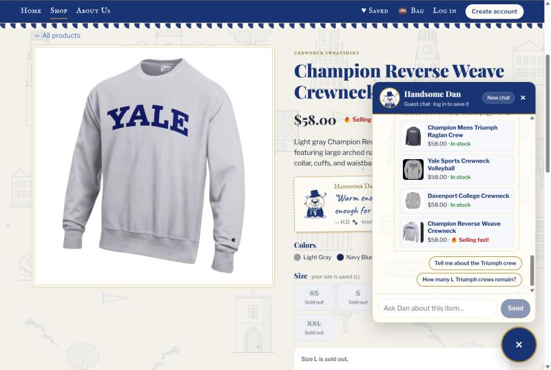
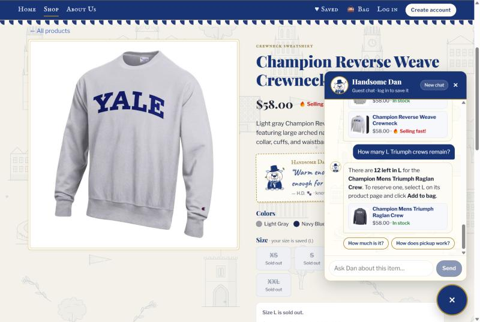
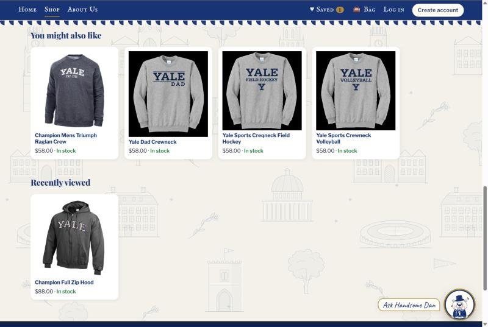
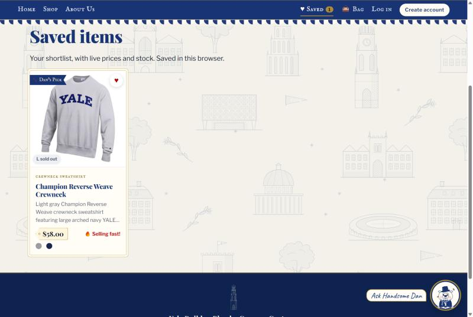

Summary
Every screenshot below was taken from the live site at http://localhost:5175 as a guest, with the back end running uvicorn main:app --reload --port 8000 from backend/. Each number in the chat or on the page was checked against data/campus_customs.db with a direct SQL query, shown in the grey box under each screenshot. The server log and browser console showed no errors during the run. Click any screenshot to open it full size.
| # | Check | What was verified | Result |
|---|---|---|---|
| 1 | Chat checks inventory and price | Price, a low-stock size and a sold-out size all match the database | PASS |
| 2a | Category question puts cards on the page | "What hoodies do you have?" shows all 27 hooded styles as cards | PASS |
| 2b | Chat-placed cards still open the product page | Large image, full description, price and stock by size, matching the database | PASS |
| 3a | Problem 9: "My size" filter + sort | 77 styles in stock in XL; per-size stock badges; price sort | PASS |
| 3b–d | Problem 9: "Ask about this item", similar styles and quick replies | Sold-out size leads to in-stock alternatives; tapping a follow-up button sends it | PASS |
| 3e–f | Problem 9: You might also like, Recently viewed and Saved items | Strips appear; the ♥ counter updates; Saved page shows live stock | PASS |
Check 1
Chat checks the inventory level and price of an item
Steps: On the Home page, open the chat and ask "Is the Saybrook College Crewneck in stock in L and XXL? How much is it?"

search_products → get_product_info), and it offered an in-stock alternative in XXL (Grace Hopper College Crewneck, $58.00, 15 left in XXL).grace-hopper-college-crewneck → price 58.0 · XXL: 15
Check 2
Dynamic search-result cards appear after a category question
Steps: In the same chat, ask "What hoodies do you have?"
2a. The page fills with matching product cards

ChatResponse.page_results) reached the website. The site moved to the Products page and rendered a "From your chat" section titled "Yale Hoodies" with all 27 matches as product cards (image, name, short description, price, stock), while the chat says "📍 27 matches showing on the page".2b. A card the chat put on the page still opens the single-item page

/products/champion-full-zip-hood, with the large image, full description, colors, $88.00 and stock for every size (XS–L 5 left each in red "selling fast", XL 8, XXL 12), all matching the database.Check 3
Usability features from Problem 9
Problem 9 added four front-end and four agent/back-end improvements (see output/usability.md). Five of them are checked here.
3a. "My size" filter, per-size stock badges and sorting

3b. "Ask about this item" on a sold-out size, plus the new find_similar_products tool

3c. Agent-written quick-reply buttons


3d. Tapping a quick reply sends it


3e. "You might also like" and "Recently viewed"


3f. Saved items page


/saved with live price and stock, including the "L sold out" badge for the shopper's remembered size.Other checks during this run
The FastAPI server log (uvicorn) showed no errors, and the browser console showed no errors. The back end's automated tests also pass: python -m pytest -q in backend/ → 37 passed. They check every product's price and stock by size against raw SQL, plus the search filters, the price fact-checker, card-number masking, waitlist rules and pickup orders.